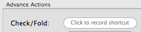

Setting a hotkey.
Setting a hotkey is a simple process. Almost any key combination can be used as a hotkey, except for system-wide shortcuts (such as Cmd-Opt-Escape, the system-wide keyboard shortcut to open the "Force Quit" window).

To record a hotkey:
- Click on a hotkey field. Fields which have not yet been set will display "Click to record shortcut".
- The field text will change to "Type Shortcut".
- Type the key combination you want to use.
- The field will display the key combination you entered. This means that the hotkey is now registered.